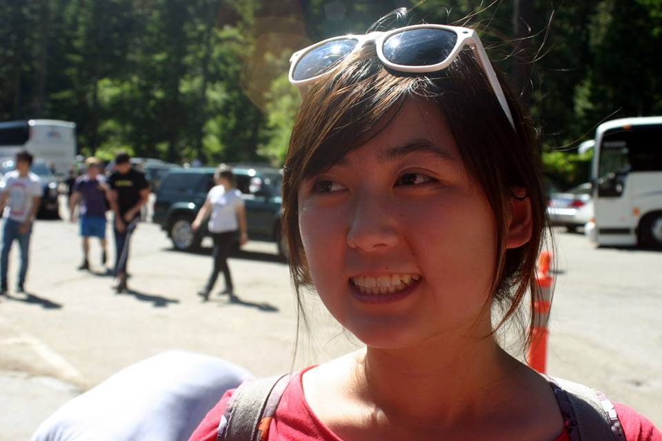

Jennifer Lu
Project Portfolio

Jennifer Lu is a fourth year studying Computer Science at University of California, San Diego.
She is from the Bay Area, born in Palo Alto and raised in Cupertino. She became interested in computer science
because of her love for art and animation films and after taking an intro class during winter quarter of
her freshman year, decided to pursue the field.
Projects
- REU TDLC program with Professor Gert Lanckriet's Lab- Context-Aware iPhone application
- Professor Griswold's Ubiquitous Computing Lab- Aiming to encourage office workers to take breaks from their desk in order to increase health and productivity
- VINO- Android wine diary application for CSE110- Users can log their wine-tasting experiences, share their stories with friends, and find wine recommendations based on their favorites.
- Computer Graphics- Surface of Revolution Editor